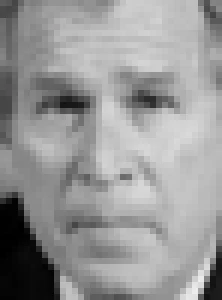
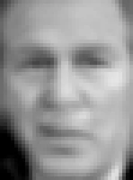
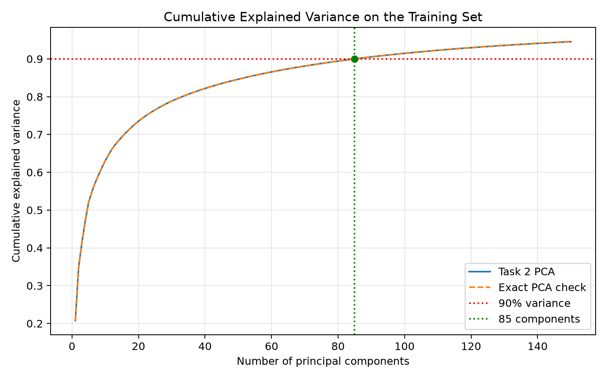
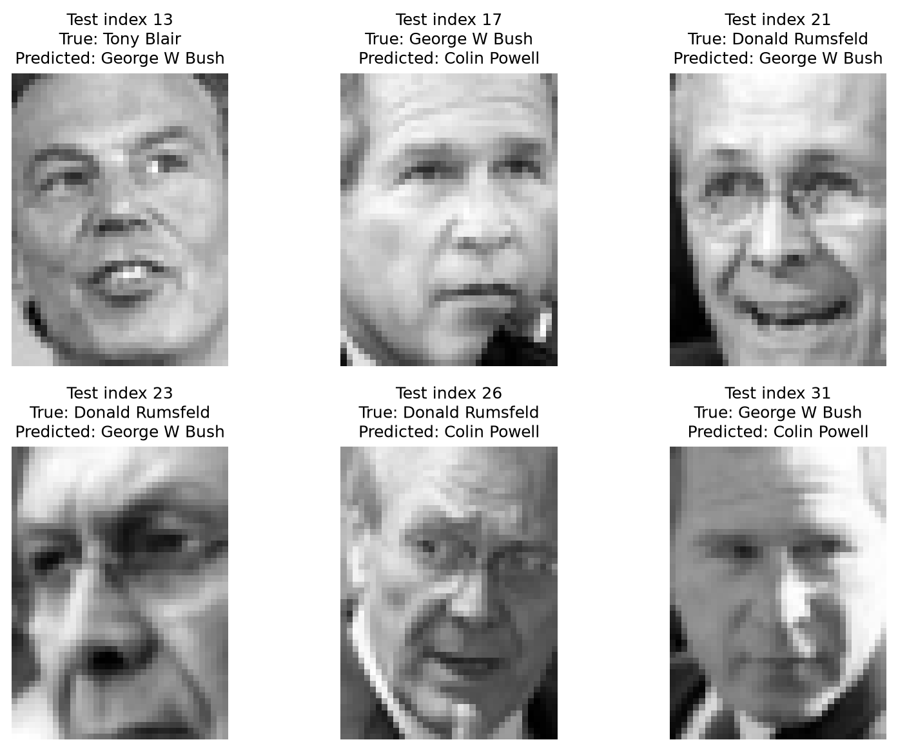

Find a common origin
Subtract the training mean face so components describe variation around it.
x centered = x − μFind the patterns behind a face. Turn 1,850 pixels into 150 meaningful weights, then recognize people in a smaller feature space.


A 100 × 100 grayscale image has 10,000 pixel features. High-dimensional inputs increase computational cost and can make models prone to overfitting: part of the curse of dimensionality.
Principal Component Analysis finds orthogonal directions of maximum variation. For facial images, these directions can be reshaped into ghostlike eigenfaces. A face is approximated by the mean face plus a weighted combination of these patterns.
Subtract the training mean face so components describe variation around it.
x centered = x − μExpress each centered face along the eigenface directions.
z = (x − μ) VᵀScale retained training projections to unit variance before the SVM.
z whitened,j = zⱼ / √λⱼAn RBF support vector machine predicts among the seven trained identities.
pixels → PCA weights → SVMThe four learning objectives specified in the laboratory handout.
Load, flatten, and preprocess high-dimensional images for mathematical modeling.
Apply PCA to capture the dataset’s most significant variance directions.
Quantify the trade-off between component count and cumulative explained variance.
Use an SVM to classify faces from their reduced-dimensional PCA projections.
The PCA and SVM parameters were learned from 1,030 training faces using the handout’s settings. Projection, reconstruction, recognition, and test-set evaluation below are calculated on your device. Model fitting is reproduced in the downloadable Python script. The complete pixels and model load only when you start an experiment (about 11.4 MiB).
Inspect the LFW images with at least 70 examples per person. Each 50 × 37 grayscale image becomes one row of 1,850 pixel values.
fetch_lfw_people(min_faces_per_person=70, resize=0.4) retrieves aligned, grayscale faces. X contains flattened images; integer labels in y map to target names. The fixed split exactly matches the handout. The test set never participates in fitting PCA or the classifier.
Project a face onto the fitted eigenfaces. Move the component slider to reconstruct it with fewer or more patterns. Reconstruction is an added exploration of the handout’s PCA projection.
Choose a dataset face in Task 1, or use a tightly cropped front-facing portrait. Uploads stay on this device.
150 · randomized · whiten=TrueTraining data only · seed 42Positive and negative weights combine the mean face and eigenface patterns. Whitening changes scale, not the reconstructed image at a fixed component count.
The exported mean and 150 components come from PCA.fit(X_train). New images are centered with this training mean. Whitened projections divide each score by √λ. Reconstruction reverses that scaling and adds the mean. More components cannot increase the ideal orthogonal-projection squared error, but retaining more variance does not guarantee better classification.
Uploads are center-cropped to a 37:50 aspect ratio, resized to 37 × 50, and converted to grayscale. No face detection or alignment is applied. Uploaded-image results are separate from the measured LFW test accuracy.
Reshape the PCA component vectors to 50 × 37. Explore the required first twelve eigenfaces, then compare the first three with the last three retained components.
components_.reshape(150, 50, 37)Contrast normalized per component for visibilityEarly eigenfaces capture broad variation such as overall facial contrast, side lighting, and center-versus-edge shading. Eigenfaces 148–150 show finer fragmented patterns with much smaller individual variance. They can include subtle facial details, alignment differences, and noise. An eigenvector’s sign can reverse without changing the PCA subspace. The mean face is a separate image; eigenface 1 is not the mean.
Run the fitted RBF SVM on your selected face, or evaluate all 258 held-out images. Recognition always uses all 150 whitened components, independently of the reconstruction slider.
SVC(kernel='rbf', class_weight='balanced')C=1 · gamma='scale' · 1,030 training facesThis is a closed-set educational classifier: it always selects one of seven LFW identities. It cannot verify identity or identify an unfamiliar person. Uploaded images use the Task 2 input; model votes are not probabilities.
Ready to run the classifier.
The classifier is fitted in Python on X_train_pca, y_train. Browser inference evaluates the genuine support vectors, dual coefficients, intercepts, and RBF kernel. Twenty-one pairwise decisions vote among seven classes. A web worker runs test-set evaluation without blocking the page. The browser implementation is checked against every exported Python prediction.
Saved Python reference run. LFW, min_faces_per_person=70, resize=0.4; 80/20 split, seed 42; 150 randomized whitened components; balanced RBF SVM. Run Task 4 to replace these metrics with a fresh browser evaluation.

84 components retain 89.8876%; 85 retain 90.0017%. The minimum is 85, computed on the training set. The exact full-SVD check and the randomized 150-component curve agree at this threshold.
| Identity | Precision | Recall | F1-score | Support |
|---|---|---|---|---|
| Ariel Sharon | 1.00 | 0.64 | 0.78 | 11 |
| Colin Powell | 0.63 | 0.96 | 0.76 | 47 |
| Donald Rumsfeld | 0.83 | 0.68 | 0.75 | 22 |
| George W Bush | 0.94 | 0.91 | 0.92 | 119 |
| Gerhard Schroeder | 0.89 | 0.89 | 0.89 | 19 |
| Hugo Chavez | 1.00 | 0.46 | 0.63 | 13 |
| Tony Blair | 0.95 | 0.78 | 0.86 | 27 |
| Macro average | 0.89 | 0.76 | 0.80 | 258 |
| Weighted average | 0.88 | 0.85 | 0.85 | 258 |
Rows are true labels; columns are predicted labels. The diagonal contains correct predictions.

Test 13 shows a tilted head and an open-mouth expression; test 21 includes glasses and a broad smile; test 31 has uneven lighting and shadows around the forehead and eyes. These are plausible causes of altered pixel projections, not established causal explanations.
Four post-lab analyses and five follow-up questions, grounded in the completed experiment.
Download all written answers ↗85 components are required with the handout’s training split: 84 retain 89.8876% and 85 retain 90.0017%. The 150-component model retains about 94.56%. The interactive variance graph uses the same training data and displays the required cumulative explained variance alongside an exact full-SVD check. These figures measure variance, not recognition accuracy.
Eigenface 1 emphasizes broad facial structure and overall facial contrast. Eigenface 2 shows a strong left-to-right brightness gradient, consistent with lighting-direction variation. Eigenface 3 contrasts the center of the face with outer regions, suggesting facial shading and outline changes. Eigenfaces 148–150 show finer fragmented patterns around features, with much lower individual variance; these may include subtle detail, alignment differences, and noise. Each component can mix several effects. Use Task 3’s comparison view to inspect the actual patterns.
For component j, whitening computes zⱼ = ((x − μ) · vⱼ) / √λⱼ, where λⱼ is the component’s training variance (singular value squared divided by n_train − 1). It gives the retained training projections unit sample variance and approximately zero cross-covariance. An RBF SVM uses squared Euclidean distance, so whitening prevents high-variance directions from dominating distance. This can improve prediction, although it can also amplify low-variance noise and does not guarantee better accuracy. Scikit-learn PCA documentation ↗
The Python run made 39 errors. At test index 13, Tony Blair was predicted as George W Bush: head tilt and an open mouth may shift facial patterns. At index 21, Donald Rumsfeld was predicted as George W Bush: glasses and a broad smile may alter eye and mouth features. At index 31, George W Bush was predicted as Colin Powell: uneven lighting and forehead/eye shadows may obscure identity-related detail. These image-based hypotheses reflect PCA’s sensitivity to global appearance, rather than proving the cause of each error. The program extracts failures using np.flatnonzero(y_pred != y_test).
It reduces computation, memory use, and redundant features. Keeping informative components can also reduce noise and overfitting, while making high-dimensional image data easier to model and visualize.
The first captures the greatest variance. The second captures the greatest remaining variance while being orthogonal to the first. Their training projections are uncorrelated.
Variation along the discarded directions is lost. This can include fine texture, subtle edges, small facial details, and noise. Retaining 100 out of 1,000 components does not mean retaining only 10% of the information; the retained variance depends on the data.
Resize and align face images consistently, flatten them, learn the training mean and eigenfaces, and project faces onto the retained components. Train a classifier on those weights to predict the known identities. Apply the same training mean and PCA transformation to held-out images.
Subtracting each pixel’s training mean makes PCA describe variation around the mean face. Without centering, the common offset can dominate the decomposition. Scikit-learn PCA centers features automatically; it does not standardize the original pixels to unit variance.
PCA reduces each face from 1,850 pixel values to 150 weights while retaining approximately 94.56% of the training variance. Just 85 components reach 90% in this experiment.
The balanced RBF SVM recognizes 219 of 258 held-out faces (84.88%). Lighting, pose, expressions, and accessories remain challenging because eigenfaces describe global appearance. Variance retention and identity discrimination are related goals, but they are not the same metric.
Try another component count